| 日付 | 2019年8月9日（金） - 2019年8月12日（月） | ||||
|---|---|---|---|---|---|
| 山域 | 草津周辺 | ||||
| メンバー | 家族（妻、長女・8歳、長男・6歳） | ||||
| 山行形態 | 子連れ3泊4日キャンプ | ||||
| アクセス | 車、リフト、バス | ||||
| ルート (Map2) |
|
2日目
7時に起床。カラッと晴れている。
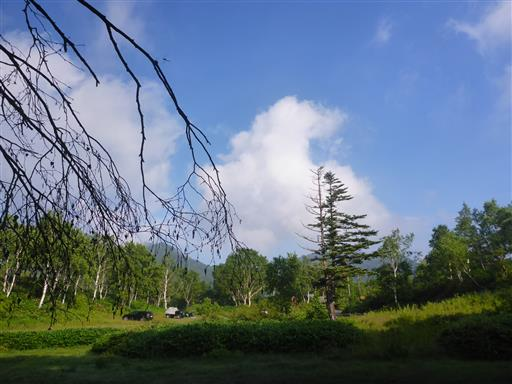
朝食をとったらお出かけ。目的地は大沼池。
昨日の様子だと息子は歩けそうなので、余裕があったら赤石山にも登ることにする。

大沼池までは林道と登山道があるが、登山道を選択。
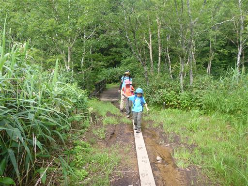
昨日の雨の影響か、道は少々ぬかるんでいる。
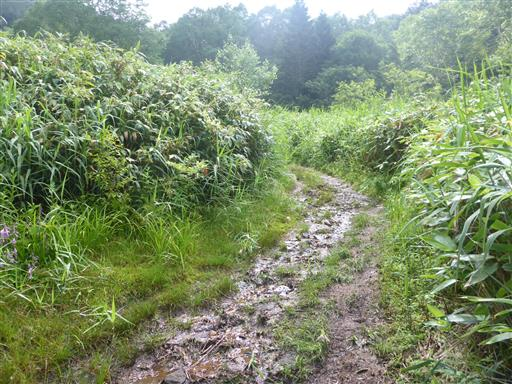
葉にトゲのある植物を発見。表にも裏にもトゲがありちょっと気持ち悪い。
帰って調べてみたら、どうやらハリブキという植物のようだ。
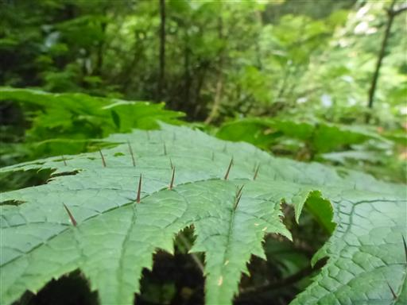
車道に合流する。ここからは平坦な道が長く続く。
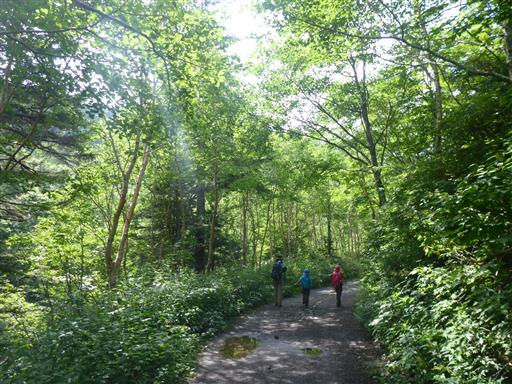
小さなカエルを発見。
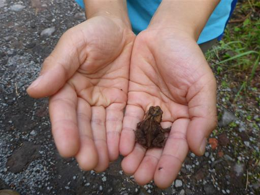
しばらく歩くと大沼池の標識が見えてくる。
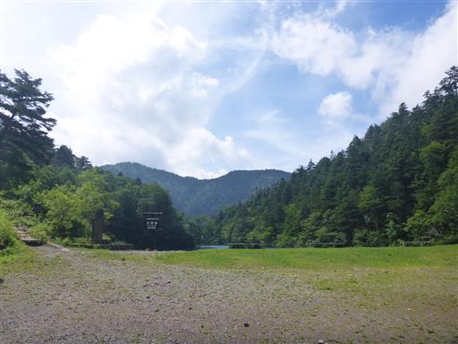
大沼池に到着。驚くほど青い湖だ。
湖面はさざ波一つなく、周囲の木々と空が映っている。

湖底までくっきりと見えていて、透明度が非常に高い。
酸性の湖で生物が生息できない環境のため、透明度が高くなっているらしい。
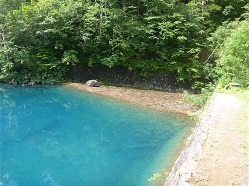
しばらく大沼池に見とれる。
以前、裏志賀山からこの湖を見たことがあるが、一度湖畔に行ってみたいと思っていた。
念願叶った風景だ。
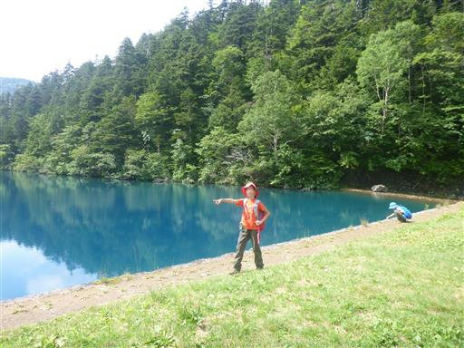
湖の反対側にあるレストハウスに向かう。
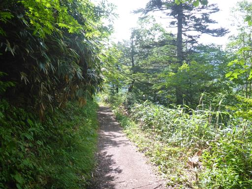
木々の間から見える大沼池は一層青色が美しい。
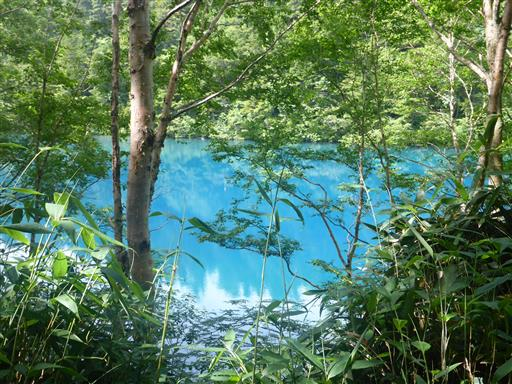
道はよく整備されている。途中の橋からは展望が開ける。
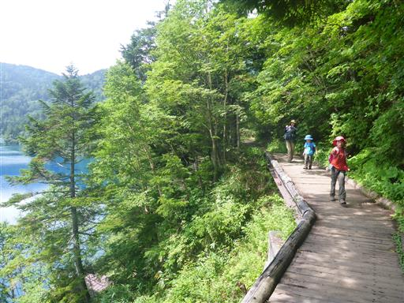
先ほど見ていたのは大沼池の一部。ここからは全体像が見渡せる。
こちらは深いので、青味も一層深い色になっている。
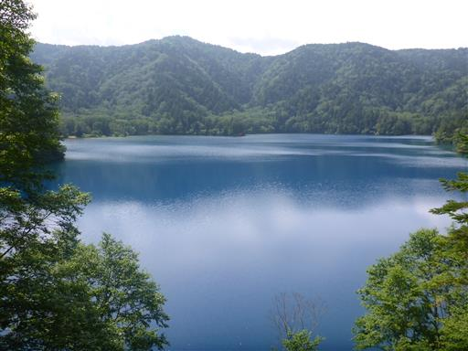
遠くに鳥居が立っているのが見える。大沼池弁財天だ。
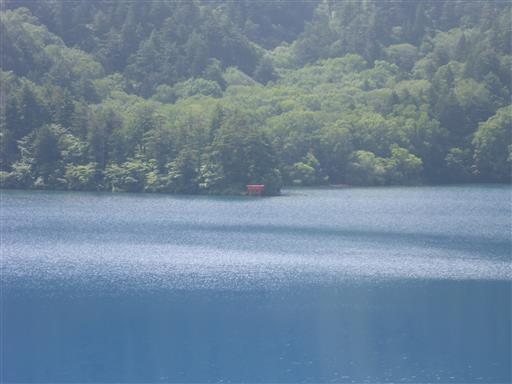
レストハウスに到着する。
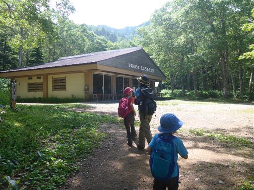
湖畔で一休み。こちらにも大沼池の標識がある。
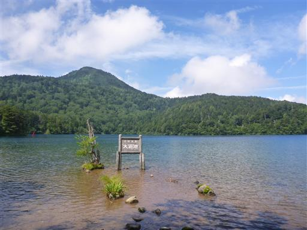
この辺りは土が茶色いため、湖の色も青色ではなく茶色だ。
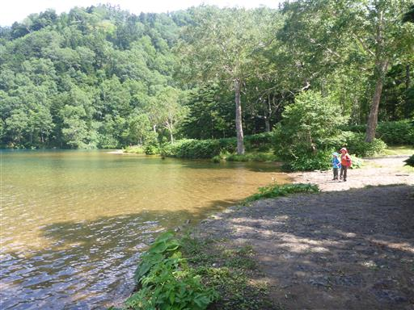
カミキリムシを発見。
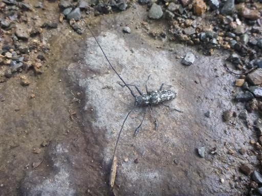
まだ息子の体力には余裕がありそうだったので、赤石山に向けて出発。
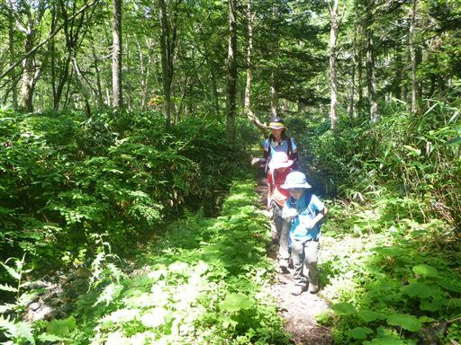
赤石山までは短いが急な階段が続く。
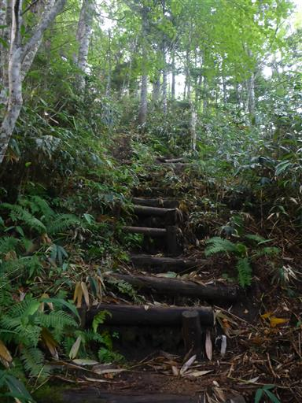
中腹から山頂部が望める。山頂には大きな岩がある。
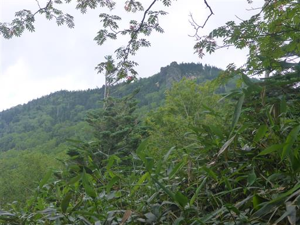
稜線に出たら山頂まではあと少し。しばらく歩くと山頂部の大岩が見えてくる。
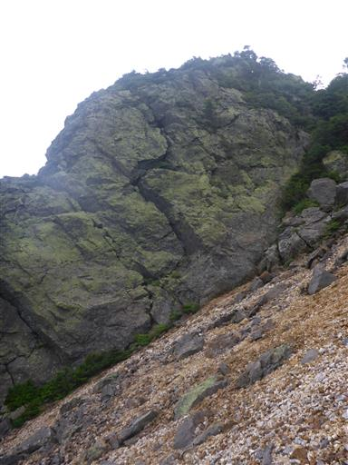
1個目の大岩をすり抜けて2個目の大岩に向かう。
その間はざれた斜面で滑落が怖い場所だ。
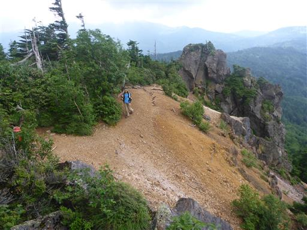
大岩に登る前にまずは山頂標識に立ち寄る。
標高2109mの赤石山に到着だ。樹木に覆われ展望は全くない。
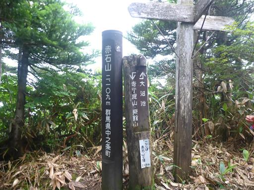
少し戻って大岩に登る。こちらの方が標高が高いので、岩の上が本当の山頂だろう。

岩の上からは大沼池が見下ろせる。光が差すと一層青く輝く。
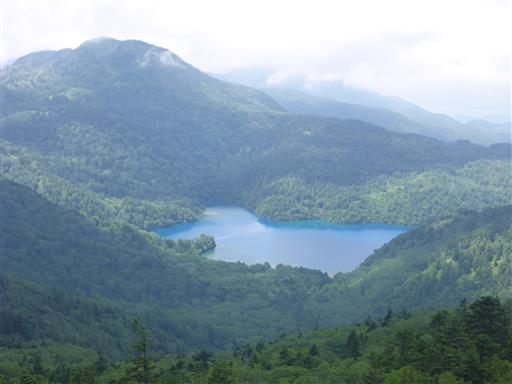
こちらは岩菅山方面。少し雲に覆われている。
いつか行ってみたい山だが、なかなか行く機会がない。
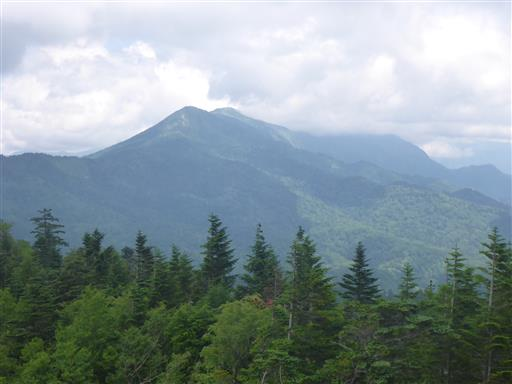
山頂で昼食をとってのんびりする。
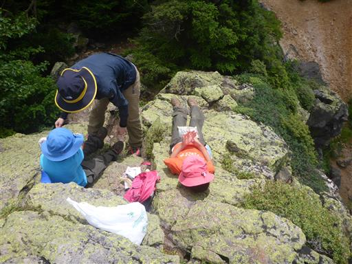
雲は多いがある程度の視界があるのがありがたい。
持ってきた双眼鏡で周囲の風景を見渡す。
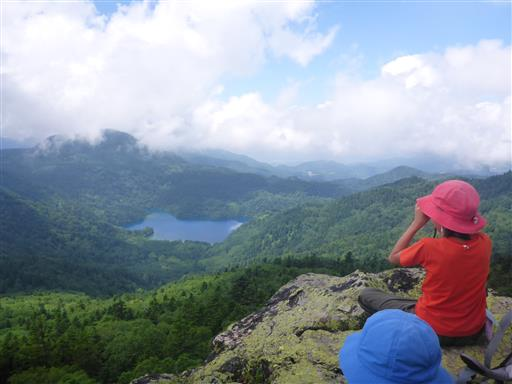
昼食をとったら下山開始。元来た道を戻る。
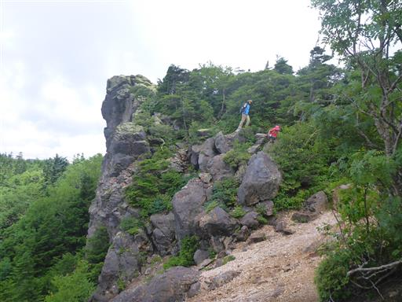
昨日に続き急斜面の登山道。
今回の旅行はストックを持ってこなかったため膝を痛めそうだ。
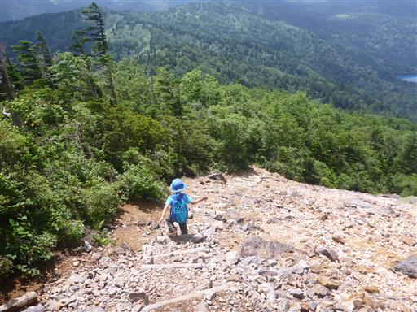
大きな葉は水芭蕉だろうか？
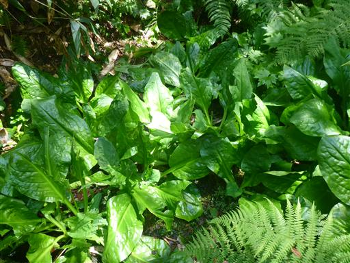
大沼池から先は林道歩き。この林道歩きが長い。そして暑い。
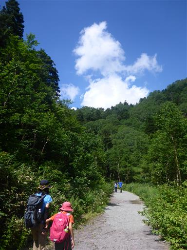
足元にウスユキソウが咲いている。

下山。息子は無事最後まで歩き切った。
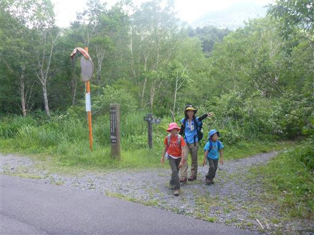
湯田中まで下って温泉「わくわくの湯」に行く。
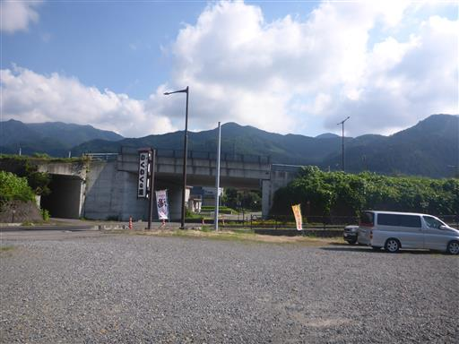
その後はイオン中野店で買い出し。
温泉と買い出しを終えたらキャンプ地に戻ってくる。
土曜になり、テントの数がだいぶ増えている。
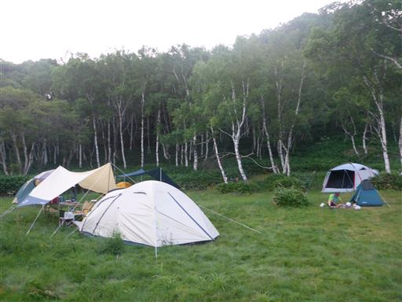
夕飯後はホタル観賞。昨日のリベンジだ。
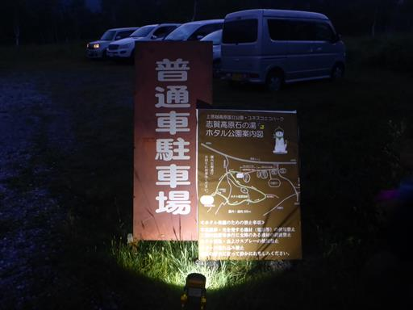
暗い道を歩いてホタルが見られる場所まで移動する。
暗くて写真は撮れなかったが、20～30匹程度のホタルを見学することができた。
日本最高所に住んでいるホタルらしく、遅い時期まで見られるのが特徴らしい。
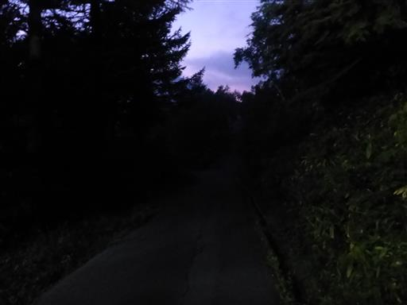
辺りはすっかり暗くなり、月が出ている。
キャンプ場に戻って就寝。
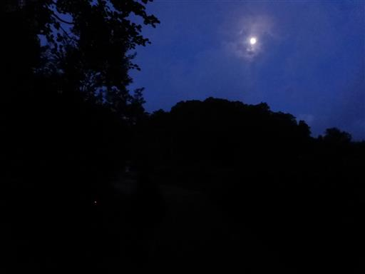